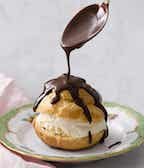

profiteroles
profiteroles are the best. that's what i'll start with. they are everything delicious all put together in one little magestic ball that was dropped from heaven. profiteroles are so delicious, the flavors go together so well, but there's a deligthful contrast in texture and temperature. Its a french pastry ball that is essentially a cream puff, but usually instead of whipped cream, custard, or pastry cream, they are filled with ice cream. The outside of the profiterole is just how it sounds: a cripsy, light as air puff. The contrast between the puff and the vanilla ice cream in the middle is divine, and it goes exraordinarily well with common toppings: chocolate sauce, caramel, or powdered sugar. personally, i think a drizzle of chocolate sauce is always the way to go.
clearly, profiteroles are a very delicious, elegant french pastry that i highly recommend you try. they are slightly fancy and always manage to put a smile on your face. my rating is...
37/10
............................................................................................................................................................................................................................
profiteroles are a bit harder to make than some other desserts because you're dealing with ice cream that can definitely melt. here's a recipe (that makes them with stracciatella ice cream, but of course, you can sub in whatever ice cream you desire. personally, i love a classic vanilla): kitchen stories stracciatella profiteroles
back to home